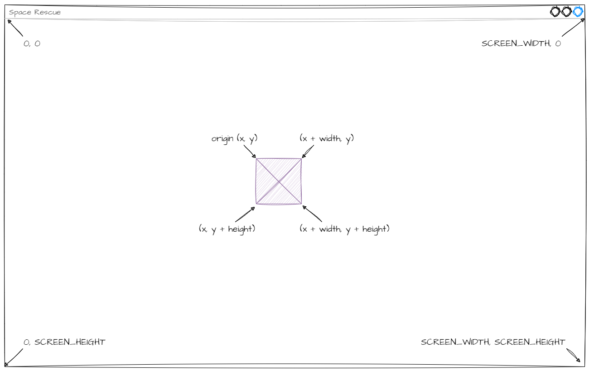
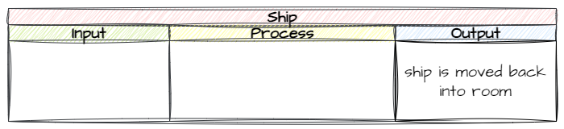
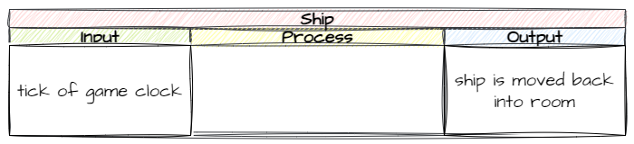
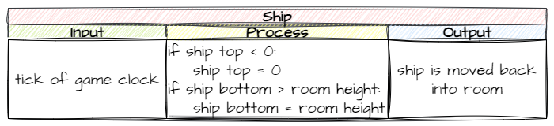

Keeping Ship in the Room#
By now you would have noticed that the ship can move both below the bottom of the screen and above the top of the screen. Lets prevent this from happening.
Planning#
Before we write the code to prevent our ship from flying off the screen, we first have to work out how we can tell the program that this is happening.
In English this it is quite simple:
if the top of the ship is above the screen → move it to inside the screen
if the bottom of the ship is below the screen → move it to inside the screen
Some of those concepts we need to translate into Python, so lets look at how we can talk to our program about the concepts:
top of the ship
bottom of the ship
above the screen
below the screen
In order to do this we need to consider the screen and how we can reference these different concepts.

Each of the concepts is related to a value we use in program.
top of the ship → the origin y value →
ybottom of the ship → the origin y value + the height of the object →
y + self.heightabove the screen → a y value less than zero →
y < 0below the screen → a y value greater than the screen height →
y > Globals.SCREEN_HEIGHT
Therefore we need to regularly check that:
ship.y > 0ship.y + ship.height < Globals.SCREEN_HEIGHT
What we need is a way to do this. Let’s consult the docs. Remember we said that the game logic resides in the objects, so let’s look specifically at the RoomObject methods.
Notice the step method? According to the docs, we can use it to run code for the object on each tick of the game clock.
Game Clock
In the early days of computers, games use to run as fast as the hardware they were running on wouild let them. This meant that the same game could run faster or slower depending on the computer you were using. This also presented a problem when computers rapidly increased their power, resulting in games that were unplayable. The game clock was created to address this issue.
Game clocks ensure that each run of the game loop takes a consistent time. During the run the game loop will, handle inputs, update the game state, update the screen. If all this is finished with time to spare, the computer (sleeps) waits until the next tick of the game clock.
In GameFrame the game clock is the same as our frame rate, so there is a tick of the game clock every 1/30 of a second.
Now we know the mechanism and values we can use, we can plan our code.
First, what output do we want from this process?

Next, what inputs will trigger this process?

Finally, what process can get us from the input to the output?

In summary, every tick of the game clock we will check if the ship is outside the screen, and if it is, we will move it back in.
Coding#
Object/Ship.py#
All this code needs to be implemented inside the Ship class so we need to open Objects/Ship.py.
Now we need to work out where. We could put this all inside the step method, and it would work, but what if we want to do other things with the ship on each tick of the clock? It could start getting really messy.
To make our code more maintainable, we’re going to keep our step method as small and clean as possible. We will do this by creating methods for the game logic and then calling those methods in step.
keep_in_room#
So, lets put the game logic into a method called keep_in_room. Add the code below to the bottom of the Ship class.
32 def keep_in_room(self):
33 """
34 Keeps the ship inside the room
35 """
36 if self.y < 0:
37 self.y = 0
38 elif self.y + self.height> Globals.SCREEN_HEIGHT:
39 self.y = Globals.SCREEN_HEIGHT - self.height
Let’s break down lines 36-39 (it might be useful to check the screen diagram in the planning):
line 36: checks if the top of the ship (
self.y) is less then the top of the screen (0)line 37: sets the ship’s origin position to the top of the screen
line 38: checks if bottom of the ship (self.y + self.height) is less then the bottom of the screen (Globals.SCREEEN_HEIGHT)
line 39: sets the ship’s origin position to far enough above the bottom that the ship will fit (Globals.SCREEN_HEIGHT - self.height)
Notice that we are using Global.SCREEN_HEIGHT but the squiggly line underneath it tells us the VS Code can’t find it. That’s because we haven’t imported the Globals module.
So at the top of Ship.py and change the highlighted code below:
1from GameFrame import RoomObject, Globals
2import pygame
step#
Now we have to call the keep_in_room() method from the step method.
Go to the bottom of the Ship class and add the code below:
41 def step(self):
42 """
43 Determine what happens to the Ship on each click of the game clock
44 """
45 self.keep_in_room()
Testing#
Now go to MainController.py and run the program and make sure that our spaceship stays within the window.
Commit and Push#
We have finished and tested another section of code so we should make a Git commit.
To do this:
In GitHub Desktop go to the bottom left-hand box and write into the summary Kept ship on screen.
Click on Commit to main
Click on Push origin
Now the work from this lesson is committed and synced with the online repo.
Completed file states#
Below are all the files we used in this lesson in their finished state. Use this to check if your code is correct.
Objects/Ship.py#
1from GameFrame import RoomObject, Globals
2import pygame
3
4class Ship(RoomObject):
5 """
6 A class for the player's avitar (the Ship)
7 """
8
9 def __init__(self, room, x, y):
10 """
11 Initialise the Ship object
12 """
13 RoomObject.__init__(self, room, x, y)
14
15 # set image
16 image = self.load_image("Ship.png")
17 self.set_image(image,100,100)
18
19 # register events
20 self.handle_key_events = True
21
22 def key_pressed(self, key):
23 """
24 Respond to keypress up and down
25 """
26
27 if key[pygame.K_w]:
28 self.y_speed = -10
29 elif key[pygame.K_s]:
30 self.y_speed = 10
31
32 def keep_in_room(self):
33 """
34 Keeps the ship inside the room
35 """
36 if self.y < 0:
37 self.y = 0
38 elif self.y + self.height> Globals.SCREEN_HEIGHT:
39 self.y = Globals.SCREEN_HEIGHT - self.height
40
41 def step(self):
42 """
43 Determine what happens to the Ship on each click of the game clock
44 """
45 self.keep_in_room()